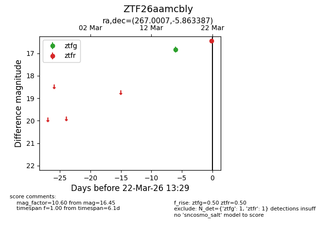
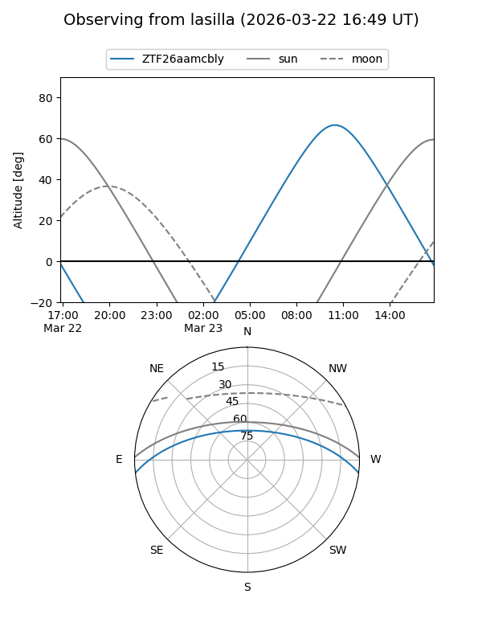
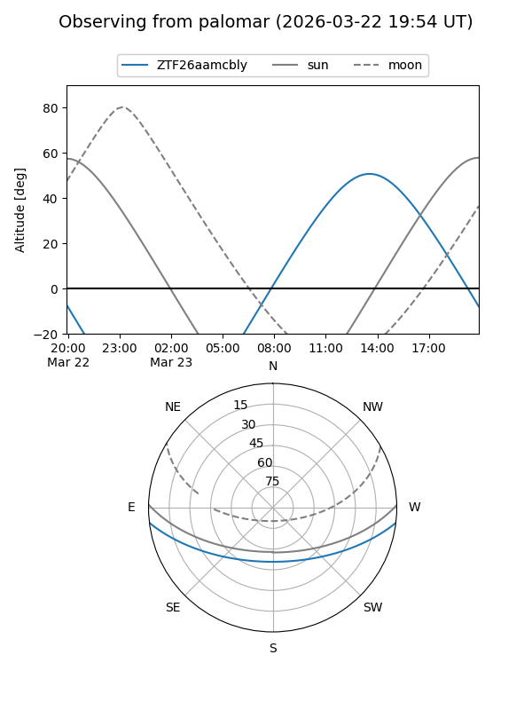

ZTF26aamcbly
Target ZTF26aamcbly at 2026-03-22 13:31
Aliases and brokers:
FINK: link
Lasair: link
ALeRCE: link
alt names
ZTF26aamcbly (ztf,fink_ztf)
Coordinates:
equatorial (ra, dec) = 267.0007,-5.86339
equatorial (HMS+DMS) = 17:48:00.16,-05:51:48.19
galactic (l, b) = (20.2761,+11.26521)
Flags:
Photometry:
last ztfg=16.84, ztfr=16.45
1 ztfg, 1 ztfr detections
Lightcurve

Visibility


Additional plots